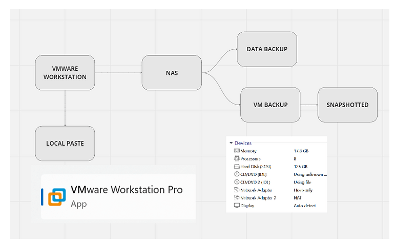

How Does a DevOps Engineer Move Data in Vmware

Navigating Data Movement in VMware: A DevOps Engineer's Guide
In the rapidly evolving world of software development and operations (DevOps), the ability to efficiently move data within virtualized environments is paramount. VMware, a leader in cloud computing and virtualization, offers robust solutions for managing virtual machines (VMs) and their data. For DevOps engineers, mastering the art of data movement in VMware is not just about ensuring operational efficiency; it's about leveraging agility, enhancing performance, and securing data integrity across the development lifecycle. Here's a comprehensive look at how DevOps professionals can effectively move data in VMware environments.
Understanding the Context: Why Move Data?
Data movement in VMware environments can serve various purposes:
-
Cloning and Migration: Replicating VMs for testing, load balancing, or disaster recovery.
-
Backup and Restoration: Ensuring data integrity and availability through scheduled backups and quick restoration processes.
-
Development and Testing: Moving data between production and non-production environments for development, testing, or staging.
Tools and Techniques for Efficient Data Movement
1. vMotion
vMotion is a VMware feature that allows the live migration of running VMs from one physical server to another with no downtime. This capability is crucial for load balancing, hardware maintenance, and minimizing service interruption. vMotion operates at the speed of your network, so ensuring a high-bandwidth, low-latency network infrastructure is key to its performance.
2. Storage vMotion
Storage vMotion extends the capabilities of vMotion by enabling the migration of VM disk files across storage arrays while the VM is running. This is particularly useful for storage maintenance and upgrades, or when optimizing storage performance without affecting VM availability.
3. VMware HCX
VMware HCX is an application mobility platform designed for simplifying workload migration, disaster recovery, and mobility between on-premises and cloud environments. For DevOps engineers working in hybrid cloud environments, HCX provides a seamless way to move workloads with minimal risk and complexity.
4. Snapshots and Cloning
Creating snapshots and clones of VMs is a fundamental practice in DevOps for testing and development. Snapshots capture the state of a VM at a specific point in time, which can be quickly reverted if needed. Cloning, on the other hand, creates a duplicate of the VM, allowing for testing in isolated environments without affecting the original VM.
5. Automated Scripts and APIs
Leveraging VMware's APIs and scripting capabilities (such as PowerCLI, a PowerShell interface for managing VMware vSphere) enables the automation of data movement tasks. Automation scripts can schedule backups, initiate migrations, or deploy VMs from templates, reducing manual effort and human error.
Best Practices for Data Movement
-
Plan and Test: Before moving significant data or VMs, plan your actions carefully and test in a controlled environment to avoid disruption.
-
Monitor Network Traffic: Data movement can consume substantial network resources. Monitor your network performance and plan migrations during low-traffic periods.
-
Ensure Data Integrity: Always verify the integrity of data after movement. This may include checksum verifications or application-level health checks.
-
Security and Compliance: Maintain security best practices and compliance by encrypting data in transit and ensuring that data movement adheres to organizational policies.
Conclusion
For DevOps engineers, mastering the movement of data in VMware environments is crucial for maintaining the speed, reliability, and flexibility required in modern software development and operations. By utilizing VMware's powerful tools and adhering to best practices, engineers can ensure that data is always where it needs to be—safe, secure, and ready for action. The journey through VMware's data movement capabilities offers a pathway to operational excellence and a competitive edge in the fast-paced world of DevOps.
Contact me on Linkedin > https://www.linkedin.com/in/rifaterdemsahin/
Imported from rifaterdemsahin.com · 2024